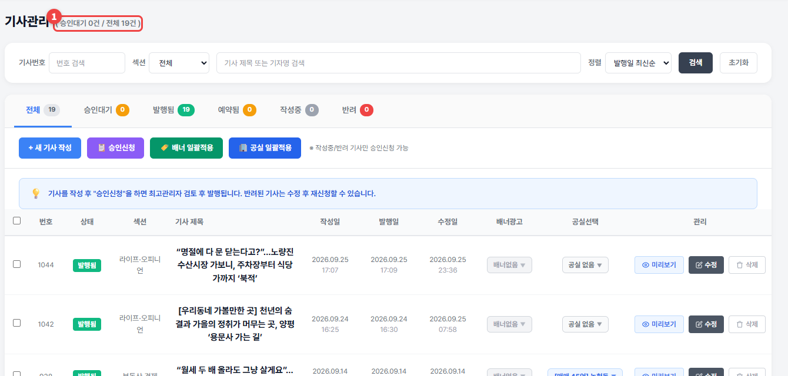

기사관리
내가 쓴 기사의 상태를 보고, 기사 아래에 배너와 공실을 붙입니다.
기사관리로 가기 →🔒 공실뉴스부동산·공실스터디부동산
1
위쪽 탭으로 상태별로 봅니다: 작성중 · 승인대기 · 발행됨 · 예약됨 · 반려. 작성중·반려 기사는 체크한 뒤 📋 승인신청으로 한 번에 신청할 수 있습니다.

| 칸 | 하는 일 |
|---|---|
| 배너광고 | 기사 아래에 나올 배너 고르기 (업체프로필 / 내 배너 / 배너없음) |
| 공실선택 | 기사 아래에 내 공실 1개 붙이기 |
| 🏷️ 기사 배너 일괄적용 | 체크한 여러 기사에 배너를 한 번에 |
| 🏢 공실 일괄적용 | 체크한 여러 기사에 공실을 한 번에 |
💡 알아두세요
- 공실은 부동산노출 + 일반인노출로 올린 광고중 매물만 붙일 수 있습니다.
- 새 기사 쓰기 → 첫 기사 쓰기